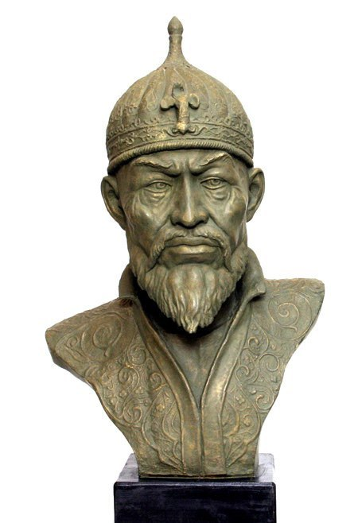

Краткое содержание предыдущих серий: Мамай хитер и этим всех достал, Дмитрий отказывается подчиняться Орде, Тохтамыш бежит в Самарканд.

Отвлечемся немного от происходившего на севере и обратимся южнее, в район Казахстана. Там, на полуострове с поэтичным названием Мангышлак, родился следующий герой нашей истории – Тохтамыш. В каком конкретно году это произошло, неизвестно – времена были дикие, с роддомами и регистрацией детей дело обстояло неважно. Однако судя по его дальнейшему поведению, Тохтамыш был молод и глуп.
С родителями ему одновременно и повезло, и не очень – с одной стороны, он был сыном правителя той области (Принц Мангышлака. Звучит!), с другой – в том самом 1376 году отец молодого монгола, Туй-Ходжи, почесав репу, отказался поддержать свое начальство, Урус-хана, в походе на Сарай, столицу Золотой Орды. Ход его мыслей можно понять – где Мангышлак и где Сарай? К тому же в столице окопался продюсер Мамай с очередным ребенком-ханом, выкуривать его оттуда долго и нудно, можно и помереть в процессе. Обидевшись на отказ, Урус-хан устроил помирание отцу Тохтамыша прямо на месте, без всяких Сараев, а сам молодой Тохтамыш, почуяв чем-то задним всю нехорошесть ситуации, резко помчался куда подальше. А если конкретно – в Самарканд.
В Самарканде и окрестностях в то время правил Тимур, он же Тамерлан. Крайне суровый, расчетливый и разумный завоеватель – вроде Чингисхана 14-го века. На тот момент у него были другие дела – необходимо было разобраться с южными соседями, однако яростный накал идиотии на севере в лице Урус-хана и его странных планов по покорению всего и вся Тамерлана тоже как-то не радовал. Он бы не отказался, по примеру Мамая, подсобить какому-нибудь чингизиду попасть на престол Орды, чтобы она утихомирилась наконец и оставила его в покое, но все как-то не везло с выбором кандидатов. А тут счастье само привалило в руки, отмахав примерно полторы тысячи километров по степи.
Пообщавшись с подарком судьбы и наведя справки о его родословной, Тимур подумал, что молодого и горячего паренька можно пристроить к делу. После чего выдал ему войск, денег и напутственный пендель в сторону Золотой Орды. Однако то ли пендель не придал нужного ускорения, то ли Тохтамыш после того марш-броска на Самарканд еще не успел отдохнуть, то ли еще что – итог был один. Схлестнувшись с войсками Урус-хана, Тохтамыш осилил убить одного из сыновей хана, но все же получил по зубам и побежал обратно в пункт отправления.
Тимур пожал плечами, выделил еще войск и стал с легким интересом ждать развития событий. Ждать пришлось недолго – против Тохтамыша вышел второй сын Уруса и опять накостылял амбициозному монголу. Счет таким образом стал 2:0. Тамерлан думал было проверить тенденцию и заслать беженца на север еще раз – а ну как снова хотя бы сына чьего убьет, но тут подоспела депеша от самого Урус-хана. Который в нелицеприятных выражениях отзывался обо всей этой катавасии, армий просил больше не присылать, а вот клоуна этого выдать – оставшиеся сыновья очень хотели побеседовать насчет погибшего брата.
Тамерлан решил, что армий у него много, а вот такой дурень-чингизид пока что один, и на предложение ответил вежливым отказом. И дабы подчеркнуть твердость отказа, засобирался в Орду сам. Доехав до Уруса, он продемонстрировал сильно опечаленному хану свои войска, но биться не стал – зима выдалась крайне холодная, и Тимур здраво рассудил, что накостылять за такие письма всяким северным дурням он и весной всяко успеет. Урус-хан, увидев южные силы под вменяемым командованием, серьезно расстроился и, на всякий случай не дожидаясь весны, скоропостижно помер.
Тамерлан, получив такие вести, со свойственной ему флегматичностью пожал плечами и стал дальше заниматься своими делами, не забыв, правда, снова отправить Тохтамыша на север – а вдруг повезет на этот раз? Что характерно, и на этот раз не повезло. Несмотря на то, что Уруса сменил Тимур-Мелик, который отличался такой кристализованной идиотией, что еле удерживался на престоле, Тохтамышу все равно выдали по рогам и едва не убили.
Задумчиво выждав, когда очередной северный придурок потеряет власть, безгранично терпеливый Тамерлан заслал своего придворного дебила снова попытать счастья. И тут таки свершилось! То ли все северные ханы перерезали друг друга сами, то ли войска Тохтамышу было выдано совсем уж немеряно – результат один: в 1380 году Тохтамыш подчинил себе всю Золотую Орду, включая тот злосчастный Сарай.
А что же там Мамай, спросите вы? Чем эта хитрая сволочь таким занималась, что протупила момент отнятия своих земель известным интеллектуалом Тохтамышем?
А Мамай все это время пытался привести русских к порядку.
Но об этом – в следующем выпуске.